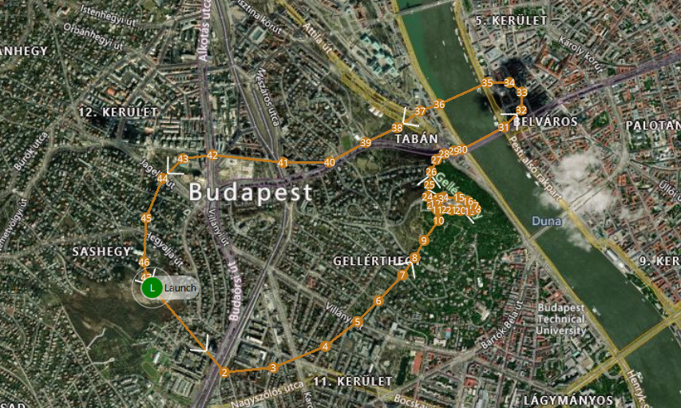
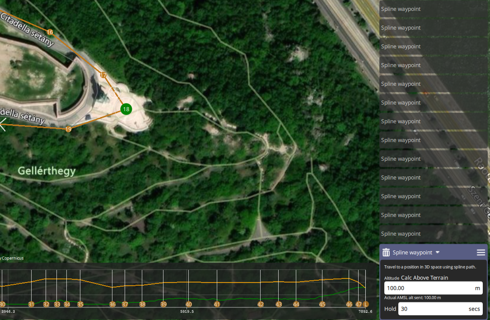
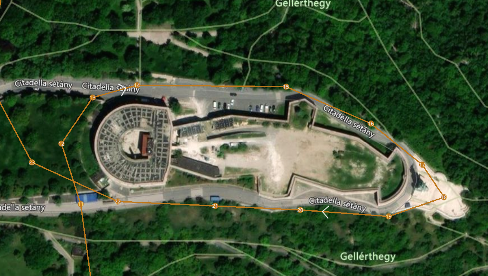
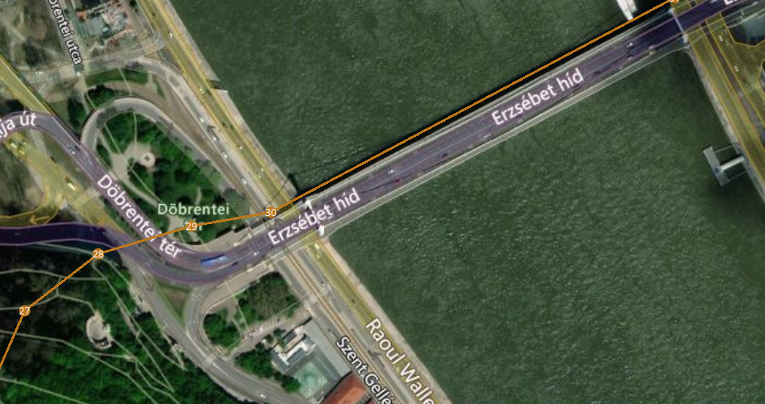
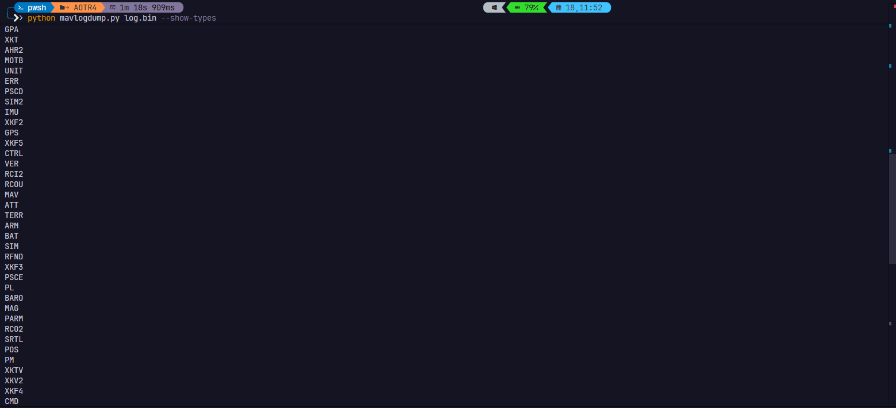
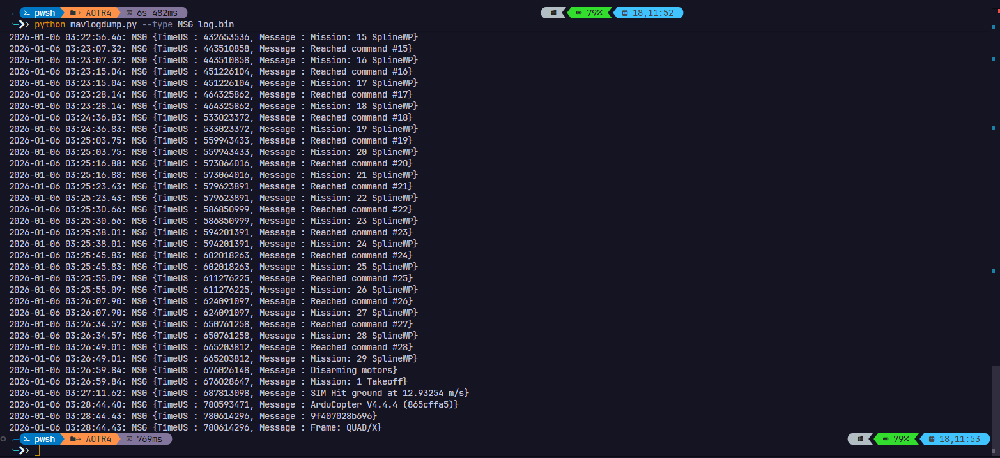
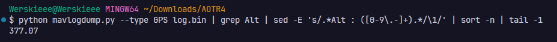
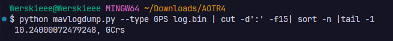
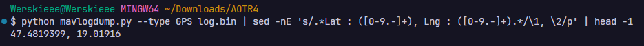

Tools
qGroundControluntuk membaca mission plan.mavlogdump.pyuntuk mengurai isi log penerbangan.
Case Reconstruction
Halaman ini mempertahankan alur post referensi: scenario, alat, file lab, lalu task demi task dengan screenshot sebagai bukti visual.

Scenario
Sebuah drone hitam ditemukan terkubur salju setelah data dari disk
yang dipulihkan mengarah ke operasi yang terencana. Tugasnya adalah
memeriksa file .plan dan log.bin untuk
memahami rute, perilaku penting selama misi, dan apa yang terjadi
sebelum drone menabrak tanah.
Task 1
Buka file .plan di qGroundControl, lalu
hitung seluruh item misi yang terlihat di rute.
Task 2
Dari daftar waypoint di panel kanan, perhatikan bahwa mayoritas item
bertipe Spline waypoint. Hitung semua waypoint jenis
tersebut.

Task 3
Zoom area berbentuk benteng pada peta. Jalur drone membentuk loop di sekitar lokasi tersebut.

Task 4
Cari waypoint yang menampilkan durasi Hold 30 secs.
Marker hijau pada peta menunjukkan titik hold tersebut.
Task 5
Nilai durasi terlihat langsung pada panel detail waypoint di
qGroundControl.
Task 6
Amati nama jembatan yang berada tepat di jalur lintasan saat drone melintasi sungai.

Task 7
Pindah ke log.bin, lalu cari timestamp awal takeoff dan
event drone menyentuh tanah. Selisih keduanya dibagi satu juta untuk
menghasilkan waktu dalam detik.


python mavlogdump.py --type MSG log.bin
start time = 48893768
hit time = 687813098
flight time = (hit time - start time) / 1000000Task 8
TimeUS)?
Baris yang paling penting ada pada event
SIM Hit ground. Ambil nilai TimeUS dari
baris tersebut.
Task 9
Ambil data GPS yang paling dekat sebelum timestamp crash, lalu baca
nilai Lat dan Lng.
python mavlogdump.py log.bin | grep -B30 687813098 | grep LatTask 10
Nilai kecepatan benturan juga tertulis di baris
SIM Hit ground pada log event.
Task 11
Filter semua entri GPS, ambil field altitude, urutkan, lalu lihat nilai paling tinggi.

python mavlogdump.py --type GPS log.bin | grep Alt | sort -n | tail -1Task 12
Dari dump GPS, ambil field speed, urutkan secara numerik, lalu baca angka paling besar.

python mavlogdump.py --type GPS log.bin | cut -d':' -f15 | sort -n | tail -1Task 13
Lihat entri GPS paling awal untuk menentukan titik lepas landas yang kemungkinan besar menjadi lokasi operator.

python mavlogdump.py --type GPS log.bin | head -1Wrap Up